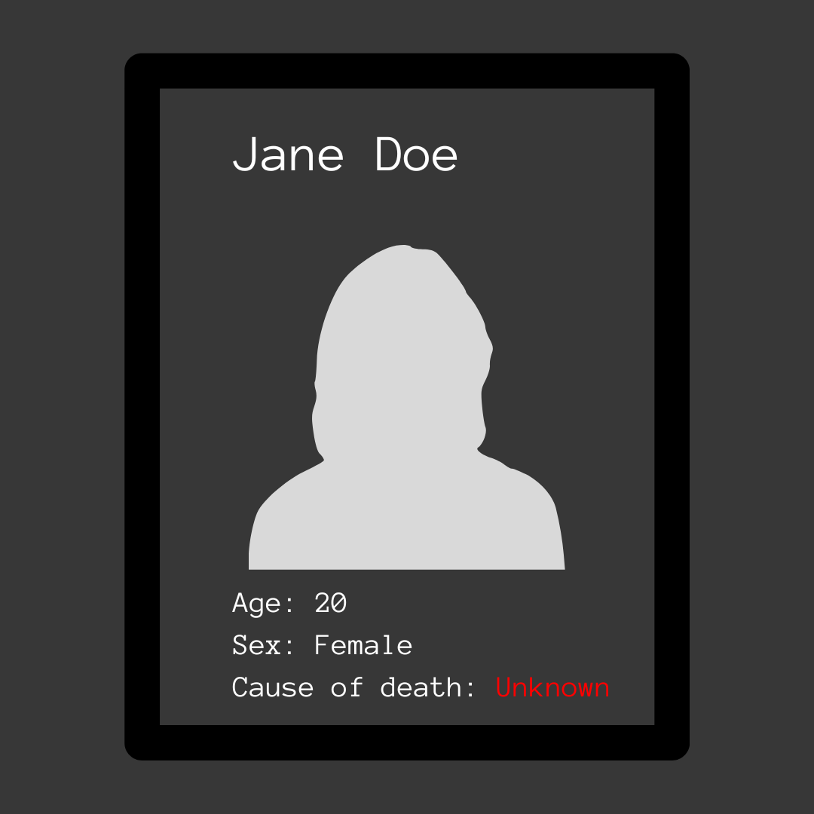
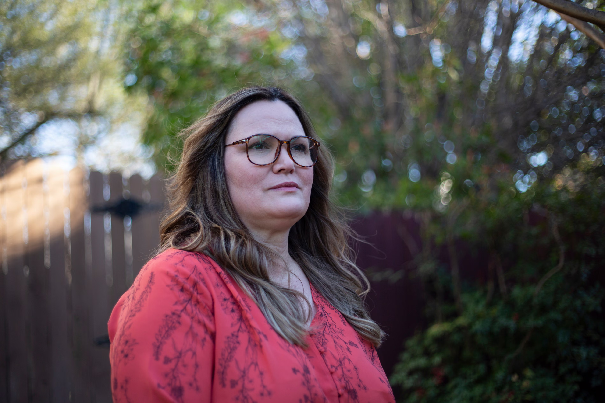

15,266 and Counting
Inside a Texas nurse’s quest to document the life and death of every woman killed by a man in America.

November 2025, Updated May 2026
1.
On the dark, humid morning of August 30, 2014, Christina Morris walked into the shadows of a parking garage outside an upscale housing development in Plano, Texas. Morris, who was 23, had been visiting friends from high school in an improvised reunion that stretched long past midnight. When she was ready to leave, the streets outside were mostly empty, so Enrique Arochi, an acquaintance, offered to escort her to her car. Grainy security-camera footage caught them from behind, walking so close together their shoulders almost touched. It was the last time Morris was ever seen alive.
Later, in news reports, her mother would grieve over the selfie Morris sent before going out that night, along with her own casual bid for her daughter to have a good time and be safe. Morris’s family and friends were used to hearing from her nearly every day. In the days after the reunion, when she didn’t call and didn’t show up at work, her loved ones contacted everyone they could think of, including Arochi, who swore that he and Morris had parted ways at their cars. Morris’s parents told themselves not to assume the worst. Still, they checked the dumpsters near the garage where she’d gone missing.
Police found Morris’s locked Toyota Celica where she had parked it. They reviewed security footage but couldn’t find any of Morris exiting the garage. At 3:55 a.m., she walked in with Arochi; three minutes later, he emerged in his car, apparently alone. Suspicious, investigators swabbed his Camaro. They found Morris’s DNA in the trunk.
By the time Arochi was arrested for aggravated kidnapping that December, Morris’s family had launched a campaign to find her. Morris’s father, Mark, organized groups every weekend to comb through fields and forests. Many of the searchers had never met Morris or her family; one volunteer told the Dallas Morning News that he came to help because his own niece had gone missing and was eventually found dead. The searchers never located any trace of Morris.

Christina Morris’ mother and grandparents put up missing posters outside The Shops at Legacy in Plano, Texas. Photo by Michael Ainsworth, Dallas Morning News.
Her family gathered on visiting days outside the detention facility where Arochi was being held, pressing his family to persuade him to reveal where Morris was. (In statements to police, he denied involvement in her disappearance.) They held signs with pictures of Morris’s smiling face and the hashtag #FindChristina. They offered a $30,000 reward. Maybe she was out there, captive somewhere. Her family would believe she was alive until proven wrong.
Dawn Wilcox, a school nurse in Plano, watched all this unfold from a distance. Years before, Morris had been a friend of her daughter’s; they were part of the same Brownies troop. Wilcox, fifty, could still picture Morris as a child: a small gap-toothed girl with straight brown bangs and gentle eyes. Despite her family’s hope that Morris would be found alive, Wilcox was gnawed by doubt. She knew that if someone went missing for more than 24 hours, the chances were not good that they’d be found.
Three weeks after Morris’s disappearance, Wilcox attended a vigil at Morris’s old high school. It was dusk, and the parking lot glowed with somber candlelight. As she wandered through the crowd, Wilcox kept running into former students—she could remember taking their temperatures and treating their stomachaches. One, a young man who was close to Morris, approached Wilcox and told her that she had been his favorite nurse. He hugged her. Wilcox thought about how often women were harmed by men they knew. Morris was trying to be safe when she let Arochi walk her to her car. “That just ate me up inside,” Wilcox said.

Dawn Wilcox at her home in Plano Texas in 2019. Photo by Laura Buckman, The Guardian
Years before, Wilcox had been hurt by a man she loved. She could sometimes narrate the story impassively, as if it had happened to someone else. More often, the experience welled up in disorganized memories—hot breath in her ear, a face streaked with mud, terror so strong it immobilized her.
Wilcox felt tied to Morris. She believed they were part of the same story about misogynistic violence, one that no one was telling. Local news covered Morris’s case closely, but to Wilcox that coverage seemed driven more by fascination than a desire to understand why such crimes kept happening. How many more women had gone missing in America since Morris? How many had been murdered? Did women have no choice, Wilcox wondered, but to wander the world hoping never to step on a landmine of a man?
Then, in May 2016, zookeepers at the Cincinnati Zoo shot and killed a gorilla named Harambe after a child crawled into its enclosure. Threats were directed at the people responsible for the animal’s death, mourners gathered at zoos and organized vigils, and an online petition demanding #JusticeForHarambe gathered hundreds of thousands of signatures. (Later, viral Harambe memes took on a life of their own.)
Wilcox found the killing upsetting, but she was incredulous at the response. How had the death of an animal ignited such furor when the murders of women and girls did not? “There’s been five women killed today,” Wilcox remembers marveling. “Where’s the outrage?”
She started posting online and got into social media spats. What about murdered women? she would ask in comments on stories about Harambe. We can care about two things at once, people would reply. But you don’t, Wilcox thought. Not enough to do anything about it.
She started looking for data on how many women in the United States were murdered by men each year. She wanted to put a link in her online comments, a gateway to a definitive account of the information she thought might make people see what she saw: a national crisis. “Look at all these freaking women!” she remembers wanting to scream. “Pay attention to this!”
But the data wasn’t there. The Centers for Disease Control and Prevention tracked murders using a reporting system with hundreds of potential attributes, such as whether domestic violence was a factor, but the information wasn’t publicly accessible. FBI figures relied on voluntary reporting from thousands of law-enforcement agencies, and some years yielded more robust data than others.
Wilcox also considered the data grossly incomplete because it was anonymous; it didn’t include information about who the victims were. Someone needed to document the women—to name them, describe them, and honor them. And if no one else was doing it, Wilcox decided that she would.
She opened a spreadsheet and got to work. Each successive row would contain the details of a woman’s murder. Wilcox started labeling columns: Name, age, location of death. Whether there were postmortem injuries, and whether the crime was a murder-suicide. The killer or suspected killer’s name—if it was available—and his relationship to the victim. Soon Wilcox had labeled more than thirty columns.
Then she started adding names. She found them in news stories: Lauren Johnson, strangled and thrown off a balcony by her boyfriend in Wauwatosa, Wisconsin, in January 2016. Jennifer Ann Lopez, the following week in Overland Park, Kansas, strangled with a pair of leopard-print leggings by a roommate high on meth. Four days later, Janise Talton-Jackson, shot by a man whose advances she’d declined at a bar in Pittsburgh. Wilcox kept going, adding name after name along with whatever context she could find.
Two years after she started the spreadsheet, in March 2018, construction workers excavating a remote wooded site in Anna, Texas, unearthed skeletal remains. The medical examiner determined that they belonged to Christina Morris. Her family could finally stop looking for her. Her mother placed a bouquet of flowers where she was found. Arochi, who was already serving a life sentence for kidnapping Morris, was never charged with her killing.
By the time Morris was found, Wilcox was three months into recording the murders of U.S. women and girls that had occurred that year. The list would grow to nearly 2,000 names.
2.
The late-September sun was sloped westward as I drove up an isolated highway that cut through the windswept plains skirting Montana’s Blackfeet Indian Reservation. Clouds clustered amid the high peaks of the Rocky Mountains visible in the distance. It was 2017, and I was researching activists in Native American communities who were demanding justice and accountability for thousands of missing and murdered women. I had come to Montana to report on the case of Ashley Loring Heavyrunner, a local woman who had disappeared that summer. Her family, like Morris’s in Texas at that very moment, were scouring the wilderness looking for her. They, too, were unsuccessful. As I drove, the vast emptiness around me felt leaden with hopelessness.
I was headed to meet one of Heavyrunner’s former teachers. Annita Lucchesi had been a professor at Blackfeet Community College the previous year, while she worked on a master’s thesis that explored the Native experience of intergenerational violence. When she started looking for reliable data on missing and murdered Native women, she couldn’t find it, so she started making her own list. “I thought this was a project that would have a start and a finish,” Lucchesi told me when we met. It didn’t turn out that way. Tracking became a mission. She hoped that her data would provide a public service, giving color and shape to a reality many in Native communities already knew: Women were dying or disappearing at an astonishing rate.
Lucchesi collected news articles, social media posts, police records, and, eventually, details from families who reached out to her directly. She filed Freedom of Information Act requests for homicide records pertaining to Native women in dozens of municipal police departments. There were rapes, stabbings, immolations. One news item she’d logged just before I met her described a man bludgeoning three women with a frying pan in a trailer. One of the women died.
It was hard to fathom sifting through this kind of horror daily, facing the scope of the loss and the brutality of it. But for decades women like Lucchesi had made it their life’s work.
Femicide: “The killing of females by males because they are female.”
-Diana Russell, feminist scholar
Femicide entered the lexicon in 1976, when radical feminist scholar Diana Russell used it to describe “the killing of females by males because they are female.” Russell wanted to push back against the normalization of women’s murders, especially in a domestic context, as private misfortunes or crimes of passion. In much the same way that defining genocide clarified the intent behind an atrocity, describing misogynistic murders as femicide demanded that the crimes be recognized as uniquely motivated. “We must recognize the sexual politics of murder,” Russell wrote. “From the burning of witches in the past, to the more recent widespread custom of female infanticide in many societies, to the killing of women for ‘honor,’ we realize that femicide has been going on a long time.”
Almost as soon as the term was coined, women began tabulating femicides. Between January and May 1979, twelve Black women were murdered in Boston, six within a two-mile radius, prompting an activist group called the Combahee River Collective to publish a pamphlet entitled “Six Black Women: Why Did They Die?” The public feared a serial killer, but the victims were bound by their gender, race, and personal circumstances, not by who took their lives. Just two of the women were killed by the same man. With each printing, the collective struck out the old number in the pamphlet’s title to reflect new murders of Black women in the city. A decade later, in 1989, a man shot and killed fourteen women, most of them engineering students, in Montreal. Before the massacre he yelled, “I hate feminists.” In response, activist Chris Domingo created the Berkeley Clearinghouse on Femicide, where she collected stories about similar killings.
The following decade, women in Mexico started counting female murder victims, including hundreds found brutalized in the deserts and dumps surrounding manufacturing facilities in Ciudad Juarez known as maquiladoras. Activists noted what connected these killings: their exaggerated cruelty, the economic conditions that put victims in vulnerable positions, the violence that invaded women’s daily life because of drug trafficking. Esther Chavez Cano, an accountant, started collecting obituaries of femicide victims and news stories about their murders in a file cabinet. Later, Maria Salguero, a data activist, built the country’s most comprehensive archive of femicides—more than 5,000 in all, accessible to the public via online maps.
In 2012, Mexico became one of the first countries in the world to pass legislation codifying femicide. Ecuador, Peru, and other Latin American countries followed. Eventually, thirty countries worldwide would adopt similar laws and pledge resources toward rooting out the causes of femicide, including misogynistic social norms and impunity for gender-based violence.
But change wasn’t propelled only by the sheer number of femicide cases. Public response was a driving force, too. Governments took action when their citizens demanded it, loudly and often, in mass protests, labor strikes, and public awareness campaigns. In Argentina, the hashtag #NiUnaMenos (Not One Less) went viral after 14-year-old Chiara Paez was beat to death and buried beneath her boyfriend’s back patio—he’d killed her because she didn’t want to get an illegal abortion. The rallying cry inspired demonstrations against femicide in dozens of cities and eventually influenced government reforms, including the legalization of abortion in the first trimester.
In 2015, Dubravka Simonovic, the UN special rapporteur on violence against women, called for every country in the world to track femicides and determine where governments had failed victims, with an eye toward prevention. Data could help reveal where, say, expanded reproductive rights or tighter restrictions on gun ownership for men accused of abuse might have protected vulnerable women. Few countries answered Simonovic’s call, however, rendering the work of citizen trackers in many places the most reliable source of data.
In Puerto Rico, Carmen Castelló, a retired social worker living in a senior facility, kick-started the territory’s primary femicide-tracking project by copying and pasting news stories about women’s murders into a Word document. When Naeemah Abrahams, a researcher in South Africa, realized that media outlets were biased toward covering women’s murders committed by strangers rather than spouses or family members, she started gathering data from detectives, mortuaries, and medical examiners—work that would inform her country’s official femicide-prevention strategy. Meanwhile, in the United Kingdom, Karen Ingala Smith, a charity worker, spearheaded the annual publication of the Femicide Census. “If any other circumstances had led to the loss of eight lives in three days in the UK, it wouldn’t be described as a series of isolated incidents,” Ingala Smith wrote in The Guardian in 2021. That year, the Femicide Census reported that nearly 90 percent of victims were killed by someone they knew.
Then there was Lucchesi, perched at her laptop in a quiet college library, plugging data into her spreadsheet—names, dates, weapons, motives. By 2019, tireless activism by Native communities effected change on the issue of missing and murdered women. Lucchesi’s work helped, just as she’d hoped. There were congressional hearings and proposed bills; activists needed data to make their case, and Lucchesi was the only one who had it. In 2020, Congress passed two laws intended to improve the federal response to gender-based violence against Native women.
More broadly, though, few people in the United States were talking about femicide. There were no official inquiries, no sustained mass protests, no mobilization against misogynistic murders, even as the #MeToo movement against sexual harassment and assault accelerated. Men killing women was more often the subject of entertainment—podcasts, documentaries, entire TV networks—than public action or legislation. This was in keeping with a long history in the United States of treating women’s murders as everyday tragedies. Caroline Davidson, a law professor at Willamette University, told me that when Congress was drafting hate-crime legislation decades ago, gender-based violence was considered “too prevalent and too common” to merit inclusion. “It would wind up swallowing the entire category of hate crimes,” she said.
What would it take for the country to see femicide as an endemic threat to women? Maybe comprehensive data was the starting point. But how to account for every woman in the country murdered by a man? Lucchesi knew someone trying to answer that very question. She told me: You should meet this school nurse in Texas. She was talking about Dawn Wilcox.
3.
Even as a kid, Wilcox felt like an adult. She grew up in and around New London, Connecticut, the oldest of four children, with a mother who was overburdened in the wake of a divorce. Wilcox cared for her sister and two brothers, making sure they ate breakfast and got to school on time. She identified as a helper, even when it came to animals. She tenderly cradled bugs instead of killing them. She once beat up a boy she saw torturing a turtle.
Then, when she was ten, her siblings were placed in foster homes. “I literally came home from school in like fifth grade and had no brothers and sisters anymore,” she said. Wilcox, who remained with her mother, was never told what happened, though she later suspected that her mother had relinquished her siblings simply because she couldn’t care for four children. When Wilcox visited her brothers and sister, they drew pictures for her and cried for their mother, promising to be good if they could just come home. She felt like an accomplice, and like her heart was being split wide open. She told people that when she turned eighteen, she would adopt her siblings.
But that was the year a cerebral aneurysm ruptured in her mother’s head while visiting family in Dallas. Wilcox was forced to drop out of high school, where she’d excelled in honors classes. She’d visited Brown University and loved it, but knew that she didn’t have the money or the support system to go there. Instead of attending college, instead of adopting her siblings, she moved to Dallas to care for her mother, who couldn’t travel home to Connecticut.
Dallas felt huge when Wilcox first arrived; she remembers being struck by how fat the phone book was. At first she knew only her mother and the cousin they lived with, but in time she found community—and with it, new ways to be a caregiver. She got married and had a daughter. She became a nurse and worked for a while in hospice, where she discovered that being present for someone at the end of their life came naturally to her. Wilcox stayed with dying patients even after family members couldn’t handle being in the room, and she washed their bodies once they were gone. No one should ever die alone, she thought.
Eventually, tracking femicides became another way of providing care. Cases needed counting, but Wilcox felt like the victims needed something, too. In news stories, their lives were often flattened out into the ugly details of the crimes perpetrated against them. Wilcox hated to leave them like that. She wanted to draw the women out, to learn who they were, what they liked, and who had lost them.
She called her database Women Count USA, and she made it public so anyone could use her findings. She threw her net wide, though she was careful not to include murders that didn’t have a gendered motivation. Wilcox didn’t include female victims of a mass shooting, for instance, unless the killer was explicitly targeting women. She set up Google alerts—“man murders woman,” “woman strangled to death”—and opened an account on Newspapers.com. She created a Facebook page and a dedicated email address to crowdsource information. She scrolled through social media posts while waiting in line at the grocery store, read news alerts while stuck in traffic. Going through the cases felt like digging in sand: more kept slipping into any progress she made. She found herself spending as many as twenty-five hours a week on the project, more during summers off from her work as a school nurse.
She wanted every entry to include a photo, so that the first thing people saw when they scanned the database was the faces of victims. She scoured the internet, sometimes for weeks or months if the woman was older or didn’t have a social media presence. Once, Wilcox had almost given up looking when she found a portrait on the dust jacket of an old self-published book. “There you are,” she whispered at her computer screen.
Wilcox also created a spreadsheet column labeled About Her. She gathered information about victims from obituaries and from interviews that friends and family gave to the media, details that captured women as the daughters, sisters, wives, mothers, professionals, friends, and community members they were before their lives were snuffed out. Kumba Sesay, a radio host shot in the head and left in a ditch by a man she was dating, had a close friend who recalled, “She would come over and eat up all my food and flip through my Netflix without finding one thing to watch. And then we would start talking about business and talking about God. That’s what I’m going to miss about her.” Kimberly A. Adams, murdered by her husband, who then killed himself, was a dental assistant with a passion for Kawasaki motorcycles. The obituary for Debra Jean Helgerson, stabbed to death by her daughter’s ex-boyfriend, described her as “the ultimate fashionista [who] loved accessorizing” and “an avid Green Bay Packer fan [who] couldn’t watch the games because she would get too anxious.”
Sometimes, when Wilcox couldn’t find details to include in the About Her section, she left a note in case someone who knew the victim was looking through the database: “Please send information about her life, dreams or interests to shecounted@gmail.com.”
As Wilcox reviewed hundreds and then thousands of cases, troubling patterns emerged. For one thing, there were uncanny similarities to the crimes. Wilcox created a drop-down menu so she could tag and group entries into categories. “Break-up/divorce filed/imminent” was self-explanatory and maddeningly frequent. “Crime scene staging/deceptive narrative” meant that a killer tried to cover his tracks by making the crime look like a suicide, reporting the victim as a missing person, or otherwise attempting to frustrate the investigation. “Camera/GPS/tech surveillance” applied to cases where technology was used to stalk, monitor, or control someone before they were murdered. (Wilcox encountered one case where the victim’s partner had insisted she remain visible on surveillance cameras anytime he was away from the house.) “Pharaoh complex” described murders like those of Erin Kroeker and her children; Kroeker’s husband killed his entire family, then set fire to their house and everything they owned—even their car—before committing suicide. As Wilcox saw it, such perpetrators believed that everything and everyone in their life was an extension of themself, so they were entitled to destroy all of it.
Sometimes the crimes she read about felt familiar to her own life. When 27-year-old Vanessa Cons was killed in Washington State in August 2018, Wilcox tagged the murder “extreme cruelty/violence,” “past restraining/protective order,” and “religious fanaticism.” Cons was stabbed more than two dozen times and then beheaded by her boyfriend, whom she’d previously reported to police. Authorities believed that he’d committed the act in front of their three-year-old child. According to a criminal complaint, he told police that he killed Cons after speaking with God, and he quoted Bible verses “about women who did not follow God’s word, so God struck them down.”
Wilcox once knew a man who’d made supernatural claims to justify his violence, back when she first moved to Dallas. She was twenty at the time, and was at a bar when he approached her. He looked like an all-American guy: blond hair, blue eyes, nice build. He was four years older than her, and he had a job installing elevators. When they started dating, he was charming and courteous. He let her wear his insulated work jumpsuit to keep warm when she walked to her job at a café on winter mornings. Wilcox was in love, which made it difficult to recognize when he started to turn
One day while they were hanging out at a bar, her boyfriend returned from the bathroom holding a bottle of cologne and sprayed it in Wilcox’s eyes. The sting was sharp, and for several moments she couldn’t see. Her boyfriend played it off as a joke. But after that, frightening incidents piled up: violent threats, physical aggression, her boyfriend driving drunk while Wilcox begged him to pull over. Still, Wilcox didn’t leave him. She’d been raised to put others’ feelings before her own.
One summer evening that was so hot the power went out, Wilcox was lying in her sweltering living room in a tank top and underwear, a candle lit nearby in the darkness. Her boyfriend was next to her. According to Wilcox, he began kissing her leg and then bit her. Wilcox yelped—it hurt badly—but when he said nothing she shrugged it off. A moment later he bit her again, this time in the soft part of her arm, gouging out a chunk of flesh.
Wilcox sat up, yelling his name. In response he pressed his finger into the base of her throat and pushed her down hard. He insisted that he wasn’t her boyfriend. “He’s out there,” he said, jerking his head toward a window, “and I’m in here with his woman.” Then: “If you say anything else, I’m gonna fucking kill you.”
For the next two hours, Wilcox lay still beside her boyfriend while he muttered about being Satan. “He said he would spray my guts all over the room,” Wilcox recalls. Sometimes he seemed to doze off, but Wilcox was too petrified to move.
Then, suddenly, he was himself again. He seemed concerned about the blood on her arm and accompanied her to a pay phone, where she called her mom. After that, Wilcox went to the emergency room.
After the incident, her boyfriend insisted that he really had been possessed by something. Wilcox stayed with him for a few months longer, until finally she worked up the courage to leave. She waited until he was asleep one night, and when she saw a neighbor heading to a waiting taxi, she asked if she could go with him.
About a week later, according to Wilcox, her boyfriend tapped on her bedroom window. He was covered in mud, out of breath, and pleading for forgiveness. She agreed to give him another chance, but it didn’t last long. She was making spaghetti for dinner one evening when police officers banged on the door. They’d arrested her boyfriend for inviting two women he met at a bar back to his apartment, where he raped them at knifepoint; afterward, he drove them to a tract of isolated farmland, where they managed to escape
He went to prison and Wilcox didn’t see him again, but she never forgot what it felt like the second time he bit her, when she knew he’d done it on purpose. “That’s when I knew there was something really wrong,” she said. She wondered if most women killed by men they know suffer a similarly frightening epiphany.
After that, violence became a recurrent theme in Wilcox’s life. In 1986, she learned that a woman she knew had been murdered in Tacoma, Washington. Her name was Carol Davidson—for a brief time when Wilcox was a teenager, Wilcox’s mother had been married to Davidson’s ex-husband. It was Davidson’s daughter who found her body. She’d been gagged, and her hands were bound behind her back. Davidson had been raped and strangled to death by someone who followed her home from a convenience store. The police couldn’t identify the perpetrator. (In 2014, based on forensic evidence, Christopher Leon Smith, who was already in prison for rape, kidnapping, and child sexual assault, was convicted of the murder.)
Two years after Davidson’s death, Wilcox married a police officer who worked crime scenes. He gave her advice on how to protect herself from an attacker: She should always carry keys in her hand when she walked to her car alone, and she shouldn’t keep a block of knives exposed in the kitchen. Too often, her husband told her, he’d seen women murdered with their own knives.
One day in September 1994, while Wilcox was at her husband’s precinct, she glimpsed a crime-scene photo on a desk. Carla Farmer, 13, had attended an all-night party, where she met a 14-year-old boy who invited her up to a nearby convenience store rooftop. He killed her there, bludgeoning her to death with a brick or a stone. There were hacksaw blades found in her eyes and vagina, and one of her legs had been broken. Wilcox, who was in nursing school by then, recognized the cuts on Farmer’s legs, abdomen, and breasts as postmortem mutilations.
Wilcox later read a newspaper article about the crime that omitted the worst details. “You have no idea how horrific it might have been when you read the article,” she said to her husband. She wanted people to know.
More than two decades later, that same desire fueled her work on Women Count USA. But Wilcox also found that gathering data was a way of coping with a world where brutality seemed a constant threat. Organizing information into orderly rows and columns gave her a sense of agency, however small, amid the chaos and horror. “If you can’t make it out—quantify it—then you can’t do anything about it,” she said.
One category of femicides especially troubled Wilcox. In 2016, Jessica Marie Ellenberger’s boyfriend stabbed her twenty-six times and slit her throat in front of her four-year-old daughter, whom he then stabbed twice. He lit their bodies on fire using coloring books as fuel. According to law enforcement, he did it because he “felt as if he was being disrespected” by Ellenberger. Wilcox categorized this kind of crime “corrective femicide,” and during the first three years of maintaining Women Count USA, she tagged 92 murders with the label. Deaths like Ellenberger’s made her furious. “How invested in your idea that a woman is yours are you that when she exercises autonomy, you become so enraged you want to kill her?” Wilcox said.
In 2018, she read about the gruesome murder of Marcquius Timmons-Moore, 43. Her death had received media coverage where it happened, in Fayetteville, North Carolina, but Wilcox could find nothing else about it online. Timmons-Moore was found two weeks after she was killed. She was naked, bound with duct tape, and tied to her bed with electrical cord. Over her head were several layers of plastic bags, zip-tied at her neck. One of her hands was closed around a piece of torn black plastic; Wilcox wondered if Timmons-Moore had tried to claw her face free in order to breathe. On the wall above the bed, her killer had scrawled in crayon, “Here lies the ultimate of all strumpets.”
Timmons-Moore’s husband was charged with her murder. After the killing, he’d taken a trip to Las Vegas, where he pawned his dead wife’s jewelry. He was convicted and sentenced to life in prison.
Several details about the crime struck Wilcox as important. Timmons-Moore’s husband had left the AC on in the house, set to a chilly fifty-six degrees. “This guy is no dum-dum,” Wilcox remembers thinking. She knew from other cases that killers sometimes set the room temperature low to slow a body’s decomposition, making it difficult for law enforcement to establish time of death. Timmons-Moore’s husband had also left a chair facing her bed; Wilcox wondered if he’d sat there to watch her die. Investigators said that the officers who found Timmons-Moore’s body would likely need counseling—that’s how horrible the scene was.
Wilcox puzzled over the use of “strumpet.” It was an archaic accusation, the same slur Othello uses against Desdemona when punishing her for perceived offenses. Wilcox didn’t know why Timmons-Moore’s husband used the word, but the writing on the wall made categorizing the murder in her database straightforward. Wilcox clicked on the drop-down box and selected “corrective femicide.”
Timmons-Moore’s death was tallied, but Wilcox felt like her life hadn’t been. There was very little to put in the About Her column. She had a daughter. She used to talk to her own mother nearly every day, but after she got married their contact was minimal. That was all. Wilcox couldn’t find anything else.
4.
Wilcox thought about murdered women all the time. She thought about them while treating schoolchildren with asthma and stomach bugs, when she got together with friends, when she ran errands. She used to embroider at night while watching TV. Now she logged cases, squinting through reading glasses at her computer screen. Sometimes she was in her living room, with her dog, Pickle, by her side and her husband sitting nearby.
One night she blurted out that a man had recently livestreamed himself slitting his ex-girlfriend’s throat. She regretted it immediately, as she saw her husband’s face fall with unease. He hadn’t signed up for this, Wilcox realized.
The truth was that Wilcox often felt alone in her work. By 2019, she’d attracted a modest following online. People left comments on her Facebook page (“Thank you for your service!”), but as far as she knew, no one was using her data. Meanwhile, she found herself dealing with trolls—always men—who wanted to know why she didn’t track male murders. More men than women are killed in the United States each year. It wasn’t about volume, Wilcox would explain. It was about the ways women were killed, and why. “If you would like to count men’s murders, or document that, I’d be happy to show you how,” she responded to one commenter. He never replied.
Then, in July 2019, Wilcox got an email from Amália Mora, a professor at the University of Arizona. The school was launching a research center dedicated to combating gender-based violence. Mora had read about Women Count USA and wanted Wilcox to join an advisory panel. She also wanted her to come to a conference in Tucson.
Wilcox googled the other attendees, eager to learn about these kindred spirits, and when she arrived at the conference, she quickly bonded with Annita Lucchesi. As a fellow femicide tracker, Lucchesi understood what it was like to immerse oneself in details of monstrous violence day after day, night after night. She also knew what it was like to feel responsible for women she’d never met—to make sure that their deaths mattered, that their lives were remembered. When Lucchesi said she wanted to get a tattoo in Tucson, Wilcox went with her. They got the same design: a feather with birds breaking away from it. Back in Plano, sifting through research, Wilcox would look at the tattoo and imagine that the birds were femicide victims, flying free.
The following year, Catherine D’Ignazio, an MIT professor, contacted Wilcox after hearing about her from Lucchesi. D’Ignazio had become a pioneer in the field of data science by applying a feminist lens to the work. Data science involves capturing, synthesizing, and analyzing information, often using sophisticated software, and D’Ignazio believed that the discipline could be more effective—and ethical—if it invited diverse perspectives. Mainstream institutions, including governments and universities, could learn from grassroots activists gathering data in their own communities on issues ranging from public health to racial justice to gender-based violence. What methods were they using? What questions were they asking? What trends could they spot that outsiders might miss?
Wilcox explained that she didn’t want the “human, spiritual part” of tracking stripped away. “This is sacred work,” she said.
Femicide became a research focus for D’Ignazio when she was living in Buenos Aires, which happened to be during the #NiUnaMenos protests. She soon met Silvana Fumega, a data scientist from Argentina, and Helena Suarez Val, an activist mapping the killings of women in Uruguay. The three women decided to seek out femicide trackers around the world and offer them support in the form of software tools and knowledge sharing.
When they began looking for interested participants, they thought they might find ten. Instead there were hundreds, many just women with spreadsheets. Wilcox stood apart from the rest. Most were counting femicides in countries with much smaller populations than the U.S. Some, such as Lucchesi with missing and murdered Native women, were focused on a subset of the national population. Wilcox, however, was “one person trying to cover just an immense geographic territory,” D’Ignazio said. She’d collected information on thousands of deaths, but there were so many more to document. The emotional burden was as heavy as the workload—reading about dead women day after day could be both triggering and desensitizing. D’Ignazio wondered if she and her colleagues could write a program to help Wilcox and other trackers find and log news stories about femicides, a tool that could save them time and heartache while also making their research more thorough.
Wilcox was open to the idea. At the time, she had a backlog of thousands of murdered women she hadn’t been able to add to Women Count USA. Plus, she wanted her research to have a tangible impact. She appended the phrase “Femicide Accountability Project” to the name of her database after reading about the work of Tom Hargrove, a former investigative reporter who in 2010 had built a database of FBI homicide tallies to study whether computers could be used to identify a serial killer’s crimes. After several iterations, Hargrove succeeded, alerting police in Gary, Indiana, to a number of sex workers who appeared to have been murdered by the same person. Police arrested a suspect, and Hargrove went on to establish the Murder Accountability Project, which used data analysis to identify patterns among unsolved murders. Wilcox wondered where her own database would lead—who it might bring to justice, what policy changes it could facilitate.
D’Ignazio and her colleagues brought together trackers to discuss how the project could help them most. During a Zoom call, Wilcox and Suarez Val bounced ideas off each other. They could create an international database to compare femicide trends across countries. They could add photos to make the data feel less clinical. Ultimately, after six months of discussion, the project’s participants settled on two tools: a Chrome extension that would highlight pertinent information in news articles, to make scanning them easier; and a Google alert that would filter out the many dozens of irrelevant murder-related emails trackers receive every day.
D’Ignazio was surprised at the result. She expected the trackers to request tools that could do the heavy lifting of data collection, but they’d explicitly rejected that approach. “They didn’t want some automatic robot thing that’s going out on the Web, scooping up cases, and dumping them into a database,” D’Ignazio told me. “They really considered their own time and attention a form of witnessing and a form of memory justice and care for the people they’re putting into the databases.” She added, “It’s a really different conception of the database than you would get from a Silicon Valley dude.”
Wilcox explained that she didn’t want the “human, spiritual part” of tracking stripped away. “This is sacred work,” she said. She’d come to see her database as a memorial to murdered women, not just a repository of information about them. Yet she also wanted her research to lead to accountability. Wouldn’t that be more likely if the data was as comprehensive as possible, even if that meant removing herself, at least in part, from the data-mining process?
As I puzzled over this dichotomy, I wondered what the families of femicide victims thought about Wilcox’s work, in particular her conception of it as memorialization. These were people whose words she’d read, whose pain she’d witnessed, but whom she’d never met. Probably few of them were aware of her research. What would they make of a stranger treating documentation of their loved one’s murder as a sacred act?
I decided to seek out the family of Marcquius Timmons-Moore, whose murder had so badly shaken Wilcox. They were hard to find. I pored over search results pertaining to Timmons-Moore’s death, leapfrogging from link to link, scanning comments sections for people who knew her. Eventually, I found someone: her twin sister. Her name was Quinetta Stinnette, and she lived in Baltimore. I messaged her through Facebook, and when we spoke on the phone, she explained that one reason it had been so hard to find information about her sister was that she didn’t go by Marcquius. Everyone who knew her called her Wendy.
I told Stinnette that there was a woman trying to document every femicide in the country, and that Wendy’s death had struck her harder than most. Stinnette agreed to speak with her.
5.
On a November afternoon in 2022, Wilcox sat wrapped in a blanket on her gray leather couch. Her auburn hair was pulled into a ponytail, and she wore a pink T-shirt and matching socks. A few feet away, the muted TV showed a commercial for the true-crime network Oxygen. “I’m going to try not to cry,” Wilcox told me as she picked up her phone. She dialed Stinnette’s number.
Stinnette’s voice was quiet when she answered. Wilcox introduced herself in a blustery rush. “I know this sounds really weird because I’m a stranger, but it just does my heart good to talk to somebody who cared about your sister,” Wilcox said. “Your sister’s case really broke my heart.”
At first, Stinnette’s replies were soft and clipped, but her voice warmed as she started talking about Wendy.
“What kind of work did she do?” Wilcox asked.
“She was an electrical engineer,” Stinnette said.
“How interesting, that’s really cool. That’s kind of an unusual job for a woman.”
Stinnette laughed. “Well, my sister was an unusual woman.”
She and Wendy were very close—“thick as thieves,” Stinnette said. Wendy was the outgoing one; she always had energy. She liked Star Trek and Jason Statham. She loved holidays, too. She dressed up as Lara Croft one Halloween, and she filled her home with Christmas decorations. When Wendy had to work late, Stinnette took care of her daughter, and Wendy would call to check in. Stinnette would hold the phone up to the sleeping girl so Wendy could hear her breathe.
“Was she funny?” Wilcox asked.
“She was hilarious.” I could almost see Stinnette’s face light up at the memory.
Wendy loved to read, mostly romance novels. “She had totes and totes and boxes and big ol’ trash bags full of nothing but books,” Stinnette said. To Wilcox this felt sad, in a way. “She probably believed in love and believed in relationships,” she said. “A lot of these guys, there aren’t any red flags until you’re with them, and once you’re with them, it’s too late.” Stinnette had once been in an abusive relationship. When she got away, she and her kids moved in with Wendy.
The man who would become Wendy’s husband was a barber, and they were introduced by a mutual friend. Her family didn’t meet him for the first six months of their relationship. By Wendy’s account, he was perfect—polite and well-spoken, and he treated her well. Still, something didn’t sit right with Stinnette, especially after she’d met him. Wendy had always been strong-willed, but around her husband she became timid. He started speaking for her and following her from room to room wherever they were. He even waited outside the bathroom for her. After they got married, she retreated from her family. When they called, she put them on speaker so he could hear everything that was said.
A month before Wendy was murdered, her and Stinnette’s older brother, Quincy, died. His funeral was the last occasion when Stinnette ever saw her sister.
“So now it’s just you,” Wilcox said.
“Just me.”
Stinnette said she still talked to Wendy “all the time.” Wilcox choked up before replying. “Next time you talk to your sister,” she said, “tell her there’s some crazy white lady in Texas who cares about her.” Stinnette laughed. “Yes ma’am, I will.”
After Wilcox hung up, she reflected on what she’d gleaned. The conversation felt like an act of retrieval. Stinnette had pulled Wendy out of the cold bedroom and away from the hateful words scrawled over her dead body. She’d placed her in a brightly lit life.
Stinnette had also mentioned that Wendy enjoyed her job. Was there something to that detail that could inform Wilcox’s research? She had a tag in her database to designate when a woman had experienced workplace stalking or harassment, but in this case work could have served as a point of intervention, a place where Wendy might have been able to get help, if her managers or colleagues were trained to recognize red flags of abuse and coercion.
Wilcox made a note to herself. She was thinking about more than counting murders. She was thinking about more, even, than contextualizing them and humanizing victims. She was thinking about solutions.
The following month, I visited Stinnette in Baltimore. She lived in a house in a quiet neighborhood on the east side of the city. I wanted to know how her conversation with Wilcox had affected her. Stinnette was gracious on their call, but what had sharing her sister’s story really meant to her?
We sat in her kitchen, where Stinnette scrolled through pictures of Wendy on her phone while FaceTiming with their mother, Robesonia, who was snowed in at her own home outside the city. They remembered how happy Wendy was doing what she loved, whether that was camping, clubbing, or working. They laughed at the memory of meals she made. “Wendy was an awful, awful cook,” Stinnette said.
A few months earlier, the two women had attended Wendy’s husband’s murder trial—portions of it, that is. Prosecutors insisted that they not come except to testify, because the details revealed during the questioning of other witnesses would be horrific. Through news reports, Stinnette and her mother learned how Wendy’s husband had cut off her tattoos while she was still alive and forced her to drink bleach. “He literally tortured my daughter,” Robesonia said.
Stinnette had wanted to punch him in the face for the way he sat emotionless in the courtroom—“no remorse, no sorrow, no hurt, no nothing.” Now she sometimes thought about writing him in prison. “I want to ask him a question that I know I’ll never get the answer to,” she said. “ ‘What do you think she did that was so bad that you thought she deserved to die for it?’ ” She found herself watching true-crime shows not to be entertained, but in search of answers. Maybe listening to other killers could help her understand why her sister was murdered.
When I asked how she felt about Wendy’s place in Women Count USA, Stinnette nodded before speaking, as if she were gathering her thoughts. She told me that at some point, she had put her sister’s ashes on a shelf in her closet. She’d put her feelings on a shelf, too. She didn’t talk much about what happened to her sister until Wilcox called. She still subscribed to the newspaper in Fayetteville, but coverage of the murder was long in the past. “I never thought anybody else would be looking at it,” she said of Wendy’s death. So she was surprised and even moved to hear that her sister’s story was part of something bigger. There was dignity in Wendy being remembered that way.
She was glad, too, that Wilcox had found a good picture of her sister to include in the database.
6.
To date, Wilcox has assembled 15,266 cases in Women Count USA. The data is organized chronologically, and she has started digging into history, documenting murders as far back as the 1950s. The research backlog continues to grow: She has more than 9,000 unopened emails, most of which she sent to herself, with news stories or research materials attached. Other emails are tips from the public. Sometimes family members of murdered women find Wilcox and ask her to add their loves ones to the database. “It is a wonderful thing you have done,” one man wrote, after Wilcox put his sister in her spreadsheet. “I genuinely believe you are changing the world.”
When I visited her in Plano, Wilcox told me that she tried to make her home office a comforting space. The walls were painted sage green, and one was adorned with a painting of Elvis. On her desk was a framed image of an angel. But other items in the room spoke to the nature of her work. There was The Encyclopedia of Serial Killers, its pages aglow with pink highlighter. A narrow white IKEA bookshelf was crammed with similar titles: When Men Murder Women, Understanding Domestic Homicide, Dead Girls. Her computer’s desktop was replete with thumbnail photos of victims she’d found for the database. Often they were grainy, which Wilcox didn’t like—it made the women seem distant. When she could, she cleaned up the photos before posting them.
With Pickle snoring on a fleece blanket nearby, Wilcox demonstrated how she looked for historical cases using Newspapers.com. She searched for the word “strangled” and then clicked on an old headline: “Woman strangled as persons watch.” The victim had been murdered in a car in front of a dozen witnesses. “I’m going to have to clip this,” Wilcox said with a troubled sigh. When she logged the case, she would tag it with the term “bystander,” indicating that witnesses had failed to report what was happening to police.
As Women Count USA gained recognition, researchers asked Wilcox to track keywords or trends for their own work. In 2020, Danielle Pollack, a policy manager for the National Family Violence Law Center, requested that she flag cases of girls killed by fathers from whom their mothers had separated. Pollack wanted to use the figures to lobby for changes in family-court systems to protect children. More recently, Alison Marganski, a criminology professor at LeMoyne University, began reviewing Wilcox’s data. She was looking for trends in coercive control, stalking, and abuse that preceded murders—behaviors that, if properly identified, could have prompted police or other individuals to reach out to victims before it was too late.
Marganski told me that she admired Wilcox’s research because it presented a fuller picture of femicide than government data did. That quality gap could widen further. In 2025, the Trump administration removed questions related to gender identity from the National Crime Victimization Survey, a project of the Bureau of Justice Statistics. Federal agencies have deleted thousands of online datasets, including ones related to public health and safety. It’s uncertain to what extent, and how reliably, the federal government will continue to collect crime data. “It’s a very precarious time,” Marganski said, “which maybe makes the case for the grassroots stuff to have a particular role.”
Before I left Plano, Wilcox told me to look up the murders of women in my town over the past few years. Even when you’re familiar with femicide, she told me, it’s jarring to see it in your own backyard.
I thought about the tension in Wilcox’s work between gathering the best data possible and memorializing victims on her own terms. Perhaps it didn’t matter in the end, or wasn’t really a tension at all. After years working with femicide trackers, Catherine D’Ignazio believes that automating the research process wouldn’t improve it. That approach only “makes sense if you’re operating with this total Western-science, get-the-numbers theory of change,” D’Ignazio said. “That’s not the theory of change that the activists are working with.” They’re interested in how change comes from asking questions and making connections, identifying patterns and imagining scenarios that could save lives. They want data to reframe public narratives about women’s murders and fuel ground-up movements. In Uruguay, when Helena Suarez Val started logging femicides, each entry in her spreadsheet initiated an action alert that urged demonstrators to gather in the streets to remember the victim and demand justice. “That, in a way, is the work,” D’Ignazio said, “producing the collective memory of these women whose lives were stolen.”
Wilcox’s efforts haven’t inspired any street protests. Most Americans don’t use the term femicide or know what it means. “It may not ever even make any difference at all,” she said of her work. But she keeps doing it because it might, and because she believes that femicide victims should be mourned together, as victims of a mass atrocity.
Before I left Plano, Wilcox told me to look up the murders of women in my town over the past few years. Even when you’re familiar with femicide, she told me, it’s jarring to see it in your own backyard. While I waited at the Dallas airport, I googled “woman murdered” in the county where I live. I was glad Wilcox had warned me.
In the span of about a decade, women in my community were killed by their boyfriends, husbands, brothers, neighbors, and, in one case, a gang of four strangers. They died down the street from me, and near the YMCA and the library; in trailer parks, and in a charming beach town with mountain views. One was beheaded with a sword by her boyfriend. Another was killed alongside her roommate’s child. A woman’s boyfriend murdered her, then photographed her body and posted the image on the anonymous online forum 4chan. A 61-year-old was strangled in a bathtub after being sexually assaulted by her younger brother. Multiple women had active restraining orders against their killers.
I had heard about most of these cases before, but only in isolation. They were never discussed as contiguous crimes. But here they were, lighting up the whole switchboard of Wilcox’s keywords: rape, firearms, mutilation, supernatural claims, staged crime scene, broken restraining order, decapitation, corrective femicide.
When the Combahee River Collective started counting Black women’s murders in Boston in 1979, they were insisting on each victim’s value by condemning their shared fate. “What is not true is that the fact that multiple killers were involved means the cases were not connected,” Black feminist scholar Terrion L. Williamson wrote in a paper about the project. “Nor does it mean there was no discernible rationale for the women’s deaths.” They were connected by economic, social, and cultural conditions—by “a thread in the fabric of violence against women,” according to the collective. The same was true of the murders in my county, and across the United States.
Wilcox had updated Marcquius Timmons-Moore’s entry in Women Count USA with details that glimmered like gems against the horror of her death: She was funny; she owned a lot of books; she had a twin sister who loved her. The day she died, at least five other women and girls were killed in the United States. One was the mother of four children. Another fostered stray animals to ready them for adoption. A third, just fifteen months old, loved ice cream. Finally, there was Natacha Rodriguez-Cruz, 45, shot by her husband in their home in Newport News, Virginia. “The incident appears to be domestic-related,” police said, “and the public is not in danger.”